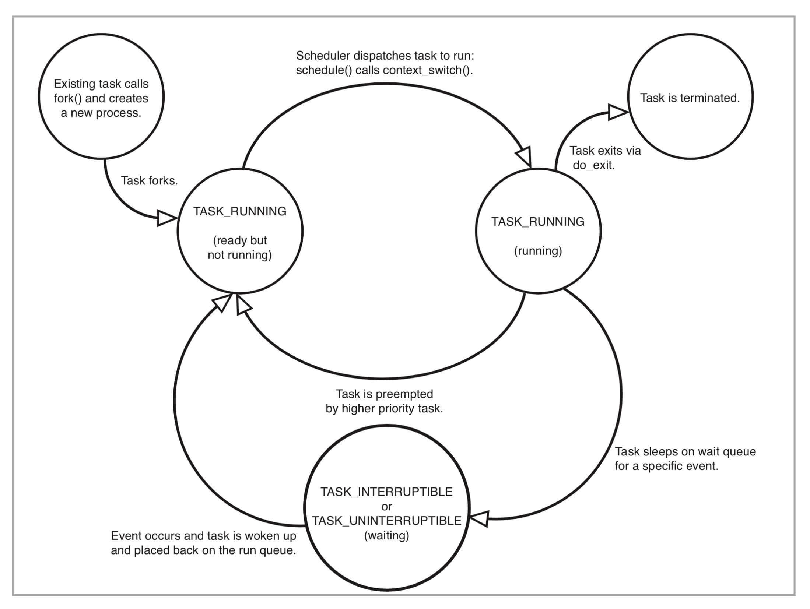

- 00 开篇词 一个态度两个步骤，成为容器实战高手.md.html
- 01 认识容器：容器的基本操作和实现原理.md.html
- 02 理解进程（1）：为什么我在容器中不能kill 1号进程？.md.html
- 03 理解进程（2）：为什么我的容器里有这么多僵尸进程？.md.html
- 04 理解进程（3）：为什么我在容器中的进程被强制杀死了？.md.html
- 05 容器CPU（1）：怎么限制容器的CPU使用？.md.html
- 06 容器CPU（2）：如何正确地拿到容器CPU的开销？.md.html
- 07 Load Average：加了CPU Cgroup限制，为什么我的容器还是很慢？.md.html
- 08 容器内存：我的容器为什么被杀了？.md.html
- 09 Page Cache：为什么我的容器内存使用量总是在临界点.md.html
- 10 Swap：容器可以使用Swap空间吗？.md.html
- 11 容器文件系统：我在容器中读写文件怎么变慢了.md.html
- 12 容器文件Quota：容器为什么把宿主机的磁盘写满了？.md.html
- 13 容器磁盘限速：我的容器里磁盘读写为什么不稳定.md.html
- 14 容器中的内存与IO：容器写文件的延时为什么波动很大？.md.html
- 15 容器网络：我修改了procsysnet下的参数，为什么在容器中不起效？.md.html
- 16 容器网络配置（1）：容器网络不通了要怎么调试.md.html
- 17 容器网络配置（2）：容器网络延时要比宿主机上的高吗.md.html
- 18 容器网络配置（3）：容器中的网络乱序包怎么这么高？.md.html
- 19 容器安全（1）：我的容器真的需要privileged权限吗.md.html
- 20 容器安全（2）：在容器中，我不以root用户来运行程序可以吗？.md.html
- 加餐01 案例分析：怎么解决海量IPVS规则带来的网络延时抖动问题？.md.html
- 加餐02 理解perf：怎么用perf聚焦热点函数？.md.html
- 加餐03 理解ftrace（1）：怎么应用ftrace查看长延时内核函数？.md.html
- 加餐04 理解ftrace（2）：怎么理解ftrace背后的技术tracepoint和kprobe？.md.html
- 加餐05 eBPF：怎么更加深入地查看内核中的函数？.md.html
- 加餐06 BCC：入门eBPF的前端工具.md.html
- 加餐福利 课后思考题答案合集.md.html
- 结束语 跳出舒适区，突破思考的惰性.md.html
03 理解进程（2）：为什么我的容器里有这么多僵尸进程？
你好，我是程远。今天我们来聊一聊容器里僵尸进程这个问题。
说起僵尸进程，相信你并不陌生。很多面试官经常会问到这个知识点，用来考察候选人的操作系统背景。通过这个问题，可以了解候选人对 Linux 进程管理和信号处理这些基础知识的理解程度，他的基本功扎不扎实。
所以，今天我们就一起来看看容器里为什么会产生僵尸进程，然后去分析如何怎么解决。
通过这一讲，你就会对僵尸进程的产生原理有一个清晰的认识，也会更深入地理解容器 init 进程的特性。
问题再现
我们平时用容器的时候，有的同学会发现，自己的容器运行久了之后，运行 ps 命令会看到一些进程，进程名后面加了<defunct>标识。那么你自然会有这样的疑问，这些是什么进程呢？
你可以自己做个容器镜像来模拟一下，我们先下载这个例子，运行 make image 之后，再启动容器。
在容器里我们可以看到，1 号进程 fork 出 1000 个子进程。当这些子进程运行结束后，它们的进程名字后面都加了标识。
从它们的 Z stat（进程状态）中我们可以知道，这些都是僵尸进程（Zombie Process）。运行 top 命令，我们也可以看到输出的内容显示有 1000 zombie 进程。
# docker run --name zombie-proc -d registry/zombie-proc:v1
02dec161a9e8b18922bd3599b922dbd087a2ad60c9b34afccde7c91a463bde8a
# docker exec -it zombie-proc bash
# ps aux
USER PID %CPU %MEM VSZ RSS TTY STAT START TIME COMMAND
root 1 0.0 0.0 4324 1436 ? Ss 01:23 0:00 /app-test 1000
root 6 0.0 0.0 0 0 ? Z 01:23 0:00 [app-test] <defunct>
root 7 0.0 0.0 0 0 ? Z 01:23 0:00 [app-test] <defunct>
root 8 0.0 0.0 0 0 ? Z 01:23 0:00 [app-test] <defunct>
root 9 0.0 0.0 0 0 ? Z 01:23 0:00 [app-test] <defunct>
root 10 0.0 0.0 0 0 ? Z 01:23 0:00 [app-test] <defunct>
…
root 999 0.0 0.0 0 0 ? Z 01:23 0:00 [app-test] <defunct>
root 1000 0.0 0.0 0 0 ? Z 01:23 0:00 [app-test] <defunct>
root 1001 0.0 0.0 0 0 ? Z 01:23 0:00 [app-test] <defunct>
root 1002 0.0 0.0 0 0 ? Z 01:23 0:00 [app-test] <defunct>
root 1003 0.0 0.0 0 0 ? Z 01:23 0:00 [app-test] <defunct>
root 1004 0.0 0.0 0 0 ? Z 01:23 0:00 [app-test] <defunct>
root 1005 0.0 0.0 0 0 ? Z 01:23 0:00 [app-test] <defunct>
root 1023 0.0 0.0 12020 3392 pts/0 Ss 01:39 0:00 bash
# top
top - 02:18:57 up 31 days, 15:17, 0 users, load average: 0.00, 0.01, 0.00
Tasks: 1003 total, 1 running, 2 sleeping, 0 stopped, 1000 zombie
…
那么问题来了，什么是僵尸进程？它们是怎么产生的？僵尸进程太多会导致什么问题？想要回答这些问题，我们就要从进程状态的源头学习，看看僵尸进程到底处于进程整个生命周期里的哪一环。
知识详解
Linux 的进程状态
无论进程还是线程，在 Linux 内核里其实都是用 task_struct{}这个结构来表示的。它其实就是任务（task），也就是 Linux 里基本的调度单位。为了方便讲解，我们在这里暂且称它为进程。
那一个进程从创建（fork）到退出（exit），这个过程中的状态转化还是很简单的。
下面这个图是 《Linux Kernel Development》这本书里的 Linux 进程状态转化图。
我们从这张图中可以看出来，在进程“活着”的时候就只有两个状态：运行态（TASK_RUNNING）和睡眠态（TASK_INTERRUPTIBLE，TASK_UNINTERRUPTIBLE）。

那运行态和睡眠态这两种状态分别是什么意思呢？
运行态的意思是，无论进程是正在运行中（也就是获得了 CPU 资源），还是进程在 run queue 队列里随时可以运行，都处于这个状态。
我们想要查看进程是不是处于运行态，其实也很简单，比如使用 ps 命令，可以看到处于这个状态的进程显示的是 R stat。
睡眠态是指，进程需要等待某个资源而进入的状态，要等待的资源可以是一个信号量（Semaphore）, 或者是磁盘 I/O，这个状态的进程会被放入到 wait queue 队列里。
这个睡眠态具体还包括两个子状态：一个是可以被打断的（TASK_INTERRUPTIBLE），我们用 ps 查看到的进程，显示为 S stat。还有一个是不可被打断的（TASK_UNINTERRUPTIBLE），用 ps 查看进程，就显示为 D stat。
这两个子状态，我们在后面的课程里碰到新的问题时，会再做详细介绍，这里你只要知道这些就行了。
除了上面进程在活的时候的两个状态，进程在调用 do_exit() 退出的时候，还有两个状态。
一个是 EXIT_DEAD，也就是进程在真正结束退出的那一瞬间的状态；第二个是 EXIT_ZOMBIE 状态，这是进程在 EXIT_DEAD 前的一个状态，而我们今天讨论的僵尸进程，也就是处于这个状态中。
限制容器中进程数目
理解了 Linux 进程状态之后，我们还需要知道，在 Linux 系统中怎么限制进程数目。因为弄清楚这个问题，我们才能更深入地去理解僵尸进程的危害。
一台 Linux 机器上的进程总数目是有限制的。如果超过这个最大值，那么系统就无法创建出新的进程了，比如你想 SSH 登录到这台机器上就不行了。
这个最大值可以我们在 /proc/sys/kernel/pid_max 这个参数中看到。
Linux 内核在初始化系统的时候，会根据机器 CPU 的数目来设置 pid_max 的值。
比如说，如果机器中 CPU 数目小于等于 32，那么 pid_max 就会被设置为 32768（32K）；如果机器中的 CPU 数目大于 32，那么 pid_max 就被设置为 N*1024 （N 就是 CPU 数目）。
对于 Linux 系统而言，容器就是一组进程的集合。如果容器中的应用创建过多的进程或者出现 bug，就会产生类似 fork bomb 的行为。
这个 fork bomb 就是指在计算机中，通过不断建立新进程来消耗系统中的进程资源，它是一种黑客攻击方式。这样，容器中的进程数就会把整个节点的可用进程总数给消耗完。
这样，不但会使同一个节点上的其他容器无法工作，还会让宿主机本身也无法工作。所以对于每个容器来说，我们都需要限制它的最大进程数目，而这个功能由 pids Cgroup 这个子系统来完成。
而这个功能的实现方法是这样的：pids Cgroup 通过 Cgroup 文件系统的方式向用户提供操作接口，一般它的 Cgroup 文件系统挂载点在 /sys/fs/cgroup/pids。
在一个容器建立之后，创建容器的服务会在 /sys/fs/cgroup/pids 下建立一个子目录，就是一个控制组，控制组里最关键的一个文件就是 pids.max。我们可以向这个文件写入数值，而这个值就是这个容器中允许的最大进程数目。
我们对这个值做好限制，容器就不会因为创建出过多进程而影响到其他容器和宿主机了。思路讲完了，接下来我们就实际上手试一试。
下面是对一个 Docker 容器的 pids Cgroup 的操作，你可以跟着操作一下。
# pwd
/sys/fs/cgroup/pids
# df ./
Filesystem 1K-blocks Used Available Use% Mounted on
cgroup 0 0 0 - /sys/fs/cgroup/pids
# docker ps
CONTAINER ID IMAGE COMMAND CREATED STATUS PORTS NAMES
7ecd3aa7fdc1 registry/zombie-proc:v1 "/app-test 1000" 37 hours ago Up 37 hours frosty_yalow
# pwd
/sys/fs/cgroup/pids/system.slice/docker-7ecd3aa7fdc15a1e183813b1899d5d939beafb11833ad6c8b0432536e5b9871c.scope
# ls
cgroup.clone_children cgroup.procs notify_on_release pids.current pids.events pids.max tasks
# echo 1002 > pids.max
# cat pids.max
1002
解决问题
刚才我给你解释了两个基本概念，进程状态和进程数目限制，那我们现在就可以解决容器中的僵尸进程问题了。
在前面 Linux 进程状态的介绍里，我们知道了，僵尸进程是 Linux 进程退出状态的一种。
从内核进程的 do_exit() 函数我们也可以看到，这时候进程 task_struct 里的 mm/shm/sem/files 等文件资源都已经释放了，只留下了一个 stask_struct instance 空壳。
就像下面这段代码显示的一样，从进程对应的 /proc/
# cat /proc/6/cmdline
# cat /proc/6/smaps
# cat /proc/6/maps
# ls /proc/6/fd
并且，这个进程也已经不响应任何的信号了，无论 SIGTERM(15) 还是 SIGKILL(9)。例如上面 pid 6 的僵尸进程，这两个信号都已经被响应了。
# kill -15 6
# kill -9 6
# ps -ef | grep 6
root 6 1 0 13:59 ? 00:00:00 [app-test] <defunct>
当多个容器运行在同一个宿主机上的时候，为了避免一个容器消耗完我们整个宿主机进程号资源，我们会配置 pids Cgroup 来限制每个容器的最大进程数目。也就是说，进程数目在每个容器中也是有限的，是一种很宝贵的资源。
既然进程号资源在宿主机上是有限的，显然残留的僵尸进程多了以后，给系统带来最大问题就是它占用了进程号。这就意味着，残留的僵尸进程，在容器里仍然占据着进程号资源，很有可能会导致新的进程不能运转。
这里我再次借用开头的那个例子，也就是一个产生了 1000 个僵尸进程的容器，带你理解一下这个例子中进程数的上限。我们可以看一下，1 个 init 进程 +1000 个僵尸进程 +1 个 bash 进程 ，总共就是 1002 个进程。
如果 pids Cgroup 也限制了这个容器的最大进程号的数量，限制为 1002 的话，我们在 pids Cgroup 里可以看到，pids.current == pids.max，也就是已经达到了容器进程号数的上限。
这时候，如果我们在容器里想再启动一个进程，例如运行一下 ls 命令，就会看到 Resource temporarily unavailable 的错误消息。已经退出的无用进程，却阻碍了有用进程的启动，显然这样是不合理的。
具体代码如下：
# ## On host
# docker ps
CONTAINER ID IMAGE COMMAND CREATED STATUS PORTS NAMES
09e6e8e16346 registry/zombie-proc:v1 "/app-test 1000" 29 minutes ago Up 29 minutes peaceful_ritchie
# pwd
/sys/fs/cgroup/pids/system.slice/docker-09e6e8e1634612580a03dd3496d2efed2cf2a510b9688160b414ce1d1ea3e4ae.scope
# cat pids.max
1002
# cat pids.current
1002
# ## On Container
[[email protected] /]# ls
bash: fork: retry: Resource temporarily unavailable
bash: fork: retry: Resource temporarily unavailable
所以，接下来我们还要看看这些僵尸进程到底是怎么产生的。因为只有理解它的产生机制，我们才能想明白怎么避免僵尸进程的出现。
我们先看一下刚才模拟僵尸进程的那段小程序。这段程序里，父进程在创建完子进程之后就不管了，这就是造成子进程变成僵尸进程的原因。
# include <stdio.h>
# include <stdlib.h>
# include <sys/types.h>
# include <sys/wait.h>
# include <unistd.h>
int main(int argc, char *argv[])
{
int i;
int total;
if (argc < 2) {
total = 1;
} else {
total = atoi(argv[1]);
}
printf("To create %d processes\n", total);
for (i = 0; i < total; i++) {
pid_t pid = fork();
if (pid == 0) {
printf("Child => PPID: %d PID: %d\n", getppid(),
getpid());
sleep(60);
printf("Child process exits\n");
exit(EXIT_SUCCESS);
} else if (pid > 0) {
printf("Parent created child %d\n", i);
} else {
printf("Unable to create child process. %d\n", i);
break;
}
}
printf("Paraent is sleeping\n");
while (1) {
sleep(100);
}
return EXIT_SUCCESS;
}
前面我们通过分析，发现子进程变成僵尸进程的原因在于父进程“不负责”，那找到原因后，我们再想想，如何来解决。
其实解决思路很好理解，就好像熊孩子犯了事儿，你要去找他家长来管教，那子进程在容器里“赖着不走”，我们就需要让父进程出面处理了。
所以，在 Linux 中的进程退出之后，如果进入僵尸状态，我们就需要父进程调用 wait() 这个系统调用，去回收僵尸进程的最后的那些系统资源，比如进程号资源。
那么，我们在刚才那段代码里，主进程进入 sleep(100) 之前，加上一段 wait() 函数调用，就不会出现僵尸进程的残留了。
for (i = 0; i < total; i++) {
int status;
wait(&status);
}
而容器中所有进程的最终父进程，就是我们所说的 init 进程，由它负责生成容器中的所有其他进程。因此，容器的 init 进程有责任回收容器中的所有僵尸进程。
前面我们知道了 wait() 系统调用可以回收僵尸进程，但是 wait() 系统调用有一个问题，需要你注意。
wait() 系统调用是一个阻塞的调用，也就是说，如果没有子进程是僵尸进程的话，这个调用就一直不会返回，那么整个进程就会被阻塞住，而不能去做别的事了。
不过这也没有关系，我们还有另一个方法处理。Linux 还提供了一个类似的系统调用 waitpid()，这个调用的参数更多。
其中就有一个参数 WNOHANG，它的含义就是，如果在调用的时候没有僵尸进程，那么函数就马上返回了，而不会像 wait() 调用那样一直等待在那里。
比如社区的一个容器 init 项目 tini。在这个例子中，它的主进程里，就是不断在调用带 WNOHANG 参数的 waitpid()，通过这个方式清理容器中所有的僵尸进程。
int reap_zombies(const pid_t child_pid, int* const child_exitcode_ptr) {
pid_t current_pid;
int current_status;
while (1) {
current_pid = waitpid(-1, ¤t_status, WNOHANG);
switch (current_pid) {
case -1:
if (errno == ECHILD) {
PRINT_TRACE("No child to wait");
break;
}
…
重点总结
今天我们讨论的问题是容器中的僵尸进程。
首先，我们先用代码来模拟了这个情况，还原了在一个容器中大量的僵尸进程是如何产生的。为了理解它的产生原理和危害，我们先要掌握两个知识点：
Linux 进程状态中，僵尸进程处于 EXIT_ZOMBIE 这个状态；
容器需要对最大进程数做限制。具体方法是这样的，我们可以向 Cgroup 中 pids.max 这个文件写入数值（这个值就是这个容器中允许的最大进程数目）。
掌握了基本概念之后，我们找到了僵尸进程的产生原因。父进程在创建完子进程之后就不管了。
所以，我们需要父进程调用 wait() 或者 waitpid() 系统调用来避免僵尸进程产生。
关于本节内容，你只要记住下面三个主要的知识点就可以了：
每一个 Linux 进程在退出的时候都会进入一个僵尸状态（EXIT_ZOMBIE）；
僵尸进程如果不清理，就会消耗系统中的进程数资源，最坏的情况是导致新的进程无法启动；
僵尸进程一定需要父进程调用 wait() 或者 waitpid() 系统调用来清理，这也是容器中 init 进程必须具备的一个功能。
思考题
如果容器的 init 进程创建了子进程 B，B 又创建了自己的子进程 C。如果 C 运行完之后，退出成了僵尸进程，B 进程还在运行，而容器的 init 进程还在不断地调用 waitpid()，那 C 这个僵尸进程可以被回收吗？
欢迎留言和我分享你的想法。如果你的朋友也被僵尸进程占用资源而困扰，欢迎你把这篇文章分享给他，也许就能帮他解决一个问题。